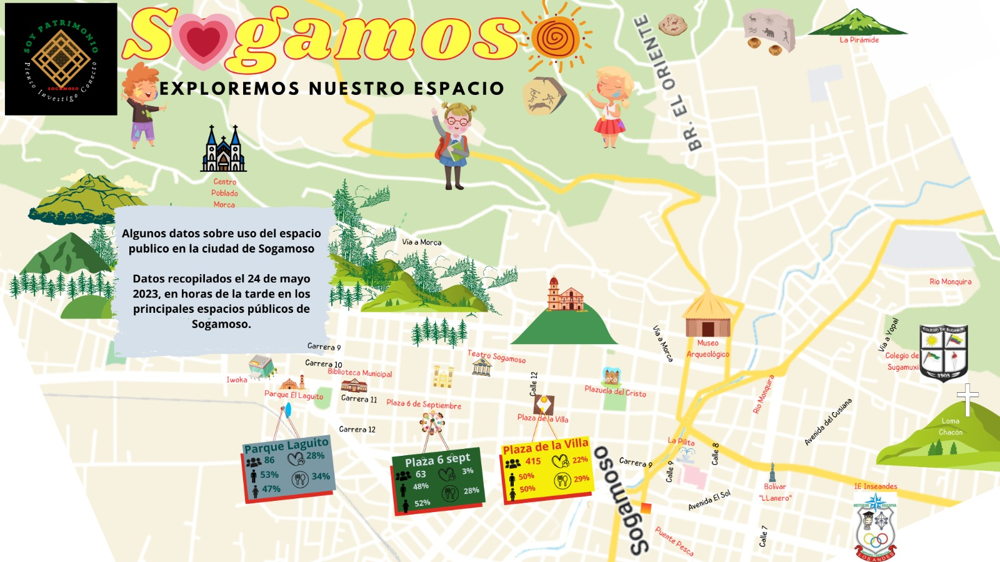

PATRIMONIO CULTURAL DE SOGAMOSO
Explora el patrimonio cultural de Sogamoso. ¡Haz clic en los iconos para ver la imagen y descripción de cada lugar!
Mapa de Sogamoso



Categorías Patrimoniales
Filtra por categoría
Patrimonio Cultural
Museos, teatros y espacios culturales
Espacios Públicos
Plazas, parques y edificios públicos
Patrimonio Natural
Parques y espacios naturales
Patrimonio Religioso
Templos e iglesias históricas
¡Explora el Mapa!
- Haz clic en los iconos para ver detalles del lugar
- El popup se adapta automáticamente al contenido
- Usa las categorías para filtrar los puntos de interés
- Comparte los lugares que más te gusten
Patrimonio Cultural de Sogamoso
Sogamoso, conocida como la "Ciudad del Sol", posee un rico patrimonio cultural que refleja su historia desde tiempos precolombinos hasta la actualidad. Descubre estos tesoros que hacen única a nuestra ciudad.
Historia Milenaria
Sogamoso fue un importante centro religioso y astronómico muisca. Los primeros asentamientos datan del siglo VI d.C.
Arquitectura Colonial
Conserva edificios coloniales que muestran la historia arquitectónica desde el siglo XVI hasta el XIX.
Naturaleza y Cultura
Parques y reservas naturales que son parte de nuestro patrimonio ecológico y cultural.
Patrimonio Cultural de Sogamoso
Nombre del Lugar
Descripción detallada del patrimonio cultural de Sogamoso.